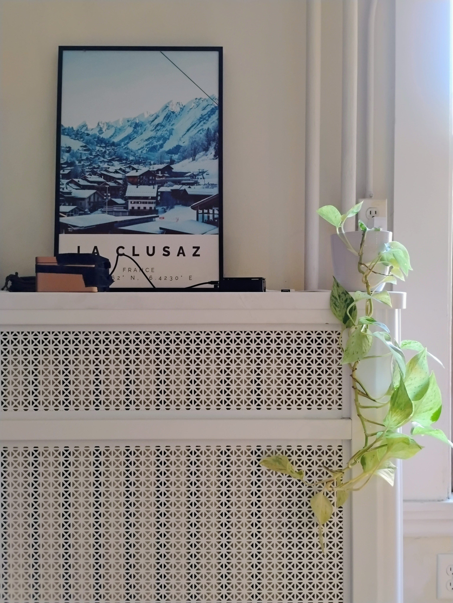
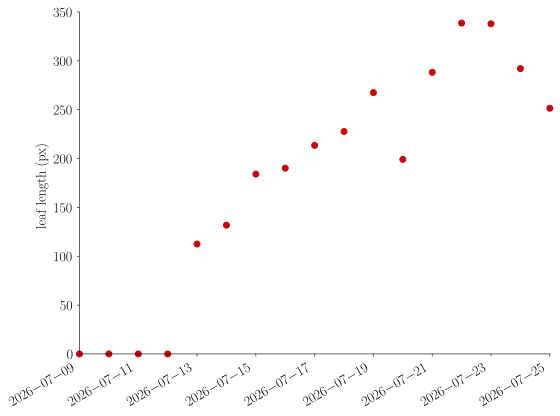

Plant growth
July 26, 2026
My Raspberry Pi, after listening to the constant noise in my street, has been watching this beautiful plant over two weeks, collecting images every 20 minutes.

The Pi is in the back, with a USB camera taped to a tea box, directly pointing at the plant pot.
A quick rsync from my Pi to my laptop, followed by an ffmpeg command produced the following timelapse:
There's a lot going on: the daylight cycle; the movement of the plant, following its circadian rhythm; the blinds switching between night, day and hot-weather positions; and did you notice that leaf slowly growing out of nowhere? I would never have paid attention to it if I hadn't watched the timelapse. My Raspberry Pi has been staring at this plant for two weeks, and yet, can we say it noticed the new leaf? Probably not, but let's find out if it can with some machine learning.
First, let's get rid of the noise so we can clearly see the leaf grow. I cropped the frame down to the plant, removing the unrelated background. The bigger problem is the light: daylight varies a lot, and nothing is visible at night. To even it out, I kept a single image per day, the one whose average brightness was that day's median:
We now clearly see how the new leaf grows, but we're left with only 16 frames, not enough for training a non-linear machine learning model.
Linear models like PCA wouldn't help either, since a simple motion across the image cannot be represented with only one or two modes.
Instead, let's use a model pretrained on videos, SAM 2, provided by Meta.
All it needs is an initial seed for the object we want to track (the leaf).
It then segments this object, and propagates this segmentation over the whole time sequence:
The red region is the mask produced by SAM 2, and the yellow part is the skeleton of the red region.
This allows us to measure the length of the leaf over time:

I was hoping to find a fully unsupervised way of detecting the leaf growing using tools such as variational autoencoders.
I didn't manage to make it work, for several reasons: the noise in the original data, the slight drift of the camera, the small size of the dataset.
But I think the main difficulty is that a model trained from scratch would need to make sense of a few raw pixels without having any knowledge of what is a plant, a pot, or a leaf.
SAM 2, which has seen millions of objects, segmented the leaf on the first try with no tuning.
So, did my Raspberry Pi notice that leaf? Not on its own: I had to hand it SAM 2's knowledge of the world, and tell it exactly what to do with the segmented region.
But looking at the end of that curve, I think it noticed before I did that the plant is thirsty. Time to water it.
The daily brightness median timelapse was produced with the following script:
Show code
#!/usr/bin/env python
"""Per-day median image over daytime frames, laid out as a dated sequence.
The median across a day's bright frames removes plant motion and per-frame noise,
leaving a clean daily snapshot; across days the main change left is growth.
"""
import argparse
import datetime as dt
import glob
import os
import subprocess
import numpy as np
from PIL import Image
HERE = os.path.dirname(os.path.abspath(__file__))
SRC = "cropped_no_blinds_no_mirror"
def parse_time(p):
_, d, s = os.path.splitext(os.path.basename(p))[0].split("_")
return dt.datetime.strptime(d + s, "%Y%m%d%H%M%S")
def main():
ap = argparse.ArgumentParser()
ap.add_argument("--src", default=SRC)
ap.add_argument("--minbright", type=float, default=0.10)
ap.add_argument("--outdir", default="daily_median")
ap.add_argument("--mp4", default="daily_median.mp4", help="output timelapse path")
args = ap.parse_args()
paths = sorted(glob.glob(os.path.join(HERE, args.src, "*.jpg")))
days = [parse_time(p).date() for p in paths]
outdir = os.path.join(HERE, args.outdir)
os.makedirs(outdir, exist_ok=True)
meds, labels = [], []
for day in dict.fromkeys(days):
imgs = []
for p, d in zip(paths, days):
if d != day:
continue
a = np.asarray(Image.open(p).convert("RGB"))
if a.mean() / 255.0 > args.minbright:
imgs.append(a)
if not imgs:
continue
med = np.median(np.stack(imgs), 0).astype(np.uint8)
meds.append(med)
labels.append(str(day))
Image.fromarray(med).save(os.path.join(outdir, f"med_{day}.png"))
print(f"{day}: {len(imgs)} bright frames")
mp4 = args.mp4
subprocess.run(["ffmpeg", "-y", "-framerate", "3", "-pattern_type", "glob",
"-i", os.path.join(outdir, "med_*.png"),
"-c:v", "libx264", "-pix_fmt", "yuv420p", "-vf", "pad=ceil(iw/2)*2:ceil(ih/2)*2",
mp4], capture_output=True)
print(f"saved {len(meds)} daily medians in {outdir}/, plus {mp4}")
if __name__ == "__main__":
main()
The segmentation and skeletonization were done with this script:
Show code
#!/usr/bin/env python
"""Track the new leaf across the daily-median sequence with SAM 2, measure its
base-to-tip length (longest geodesic path through the skeleton, ignoring side
branches), and dump the segmentation + main axis overlaid on the images as a video
plus a length-vs-time CSV.
"""
import argparse
import csv
import glob
import os
import shutil
import subprocess
import tempfile
import numpy as np
from PIL import Image, ImageDraw
from scipy import ndimage
from scipy.sparse import csr_matrix
from scipy.sparse.csgraph import dijkstra
from skimage.morphology import skeletonize
HERE = os.path.dirname(os.path.abspath(__file__))
NEIGH = [(-1, -1), (-1, 0), (-1, 1), (0, -1), (0, 1), (1, -1), (1, 0), (1, 1)]
def geodesic(skel):
"""Longest shortest-path through the skeleton: (length_px, path_mask)."""
ys, xs = np.where(skel)
n = len(ys)
if n == 0:
return 0.0, np.zeros_like(skel)
if n == 1:
pm = np.zeros_like(skel); pm[ys[0], xs[0]] = True
return 0.0, pm
idx = {(int(y), int(x)): i for i, (y, x) in enumerate(zip(ys, xs))}
rows, cols, w, deg = [], [], [], np.zeros(n, int)
for i, (y, x) in enumerate(zip(ys, xs)):
for dy, dx in NEIGH:
j = idx.get((y + dy, x + dx))
if j is not None:
rows.append(i); cols.append(j); w.append(float(np.hypot(dy, dx)))
deg[i] += 1
G = csr_matrix((w, (rows, cols)), shape=(n, n))
ends = np.where(deg == 1)[0]
if len(ends) == 0: # pure loop: fall back to any node
ends = np.array([0])
dist, pred = dijkstra(G, indices=ends, return_predecessors=True, directed=False)
dist = np.where(np.isfinite(dist), dist, -1)
a, target = np.unravel_index(int(np.argmax(dist)), dist.shape)
length = float(dist[a, target])
src, j, path = ends[a], target, [target] # walk predecessors back to source
while j != src:
j = pred[a][j]
if j < 0:
break
path.append(j)
pm = np.zeros_like(skel)
for i in path:
pm[ys[i], xs[i]] = True
return length, pm
def main():
ap = argparse.ArgumentParser()
ap.add_argument("--meddir", default="daily_median")
ap.add_argument("--seed", default="325,175", help="x,y (col,row) click on the new leaf")
ap.add_argument("--seedframe", type=int, default=-1, help="frame to place click (-1 = last)")
ap.add_argument("--device", default="cpu")
ap.add_argument("--model", default="facebook/sam2.1-hiera-small")
ap.add_argument("--fps", type=float, default=2.0)
ap.add_argument("--out", default="new_leaf_track.mp4")
ap.add_argument("--csv", default="new_leaf_length.csv")
args = ap.parse_args()
med = sorted(glob.glob(os.path.join(HERE, args.meddir, "med_*.png")))
labels = [os.path.basename(p)[4:-4] for p in med]
T = len(med)
seedframe = args.seedframe % T
imgs = [np.asarray(Image.open(p).convert("RGB")) for p in med]
H, W = imgs[0].shape[:2]
fdir = tempfile.mkdtemp(prefix="sam_frames_")
try:
for i, im in enumerate(imgs):
Image.fromarray(im).save(os.path.join(fdir, f"{i}.jpg"), quality=95)
import torch
from sam2.sam2_video_predictor import SAM2VideoPredictor
predictor = SAM2VideoPredictor.from_pretrained(args.model, device=args.device)
x, y = (float(v) for v in args.seed.split(","))
with torch.inference_mode():
state = predictor.init_state(video_path=fdir)
predictor.add_new_points_or_box(state, frame_idx=seedframe, obj_id=1,
points=np.array([[x, y]], np.float32),
labels=np.array([1], np.int32))
seg = {}
for reverse in ([True, False] if 0 < seedframe < T - 1 else [seedframe > 0]):
for fi, ids, logits in predictor.propagate_in_video(state, start_frame_idx=seedframe, reverse=reverse):
m = (logits[0] > 0).cpu().numpy().squeeze().astype(np.uint8)
if m.shape != (H, W):
m = np.asarray(Image.fromarray(m * 255).resize((W, H), Image.NEAREST)) > 127
seg[fi] = m.astype(bool)
finally:
shutil.rmtree(fdir, ignore_errors=True)
masks = [seg[i] for i in range(T)]
lengths = []
fdir2 = tempfile.mkdtemp(prefix="overlay_")
try:
red, yellow = np.array([220, 40, 40]), np.array([255, 230, 0])
for i, (im, m, lab) in enumerate(zip(imgs, masks, labels)):
length, path = geodesic(skeletonize(m))
lengths.append(length)
print(f"{lab}: base-to-tip length {length:6.1f} px area {m.sum() / (H * W) * 100:5.2f}%")
vis = im.copy()
if m.any():
vis[m] = (0.5 * vis[m] + 0.5 * red).astype(np.uint8)
vis[m ^ ndimage.binary_erosion(m, iterations=2)] = red
vis[ndimage.binary_dilation(path, iterations=1)] = yellow
pim = Image.fromarray(vis)
ImageDraw.Draw(pim).text((10, 10), f"{lab} length {length:.0f}px", fill=(255, 255, 255))
pim.save(os.path.join(fdir2, f"{i:03d}.png"))
with open(args.csv, "w", newline="") as fh:
w = csv.writer(fh)
w.writerow(["date", "length_px"])
for lab, ln in zip(labels, lengths):
w.writerow([lab, f"{ln:.1f}"])
out = args.out
subprocess.run(["ffmpeg", "-y", "-framerate", str(args.fps), "-i", os.path.join(fdir2, "%03d.png"),
"-c:v", "libx264", "-pix_fmt", "yuv420p",
"-vf", "pad=ceil(iw/2)*2:ceil(ih/2)*2", out], capture_output=True)
print(f"saved {args.out}, {args.csv}")
finally:
shutil.rmtree(fdir2, ignore_errors=True)
if __name__ == "__main__":
main()
And the length of the leaf was plotted with this script:
Show code
#!/usr/bin/env python
import argparse
import csv
import datetime as dt
import os
import matplotlib.pyplot as plt
def main():
parser = argparse.ArgumentParser()
parser.add_argument('csv', type=str, help='length-vs-time csv')
parser.add_argument('--out-dir', type=str, default=None, help='output directory for plot')
args = parser.parse_args()
dates, lengths = [], []
with open(args.csv) as f:
for row in csv.DictReader(f):
dates.append(dt.date.fromisoformat(row['date']))
lengths.append(float(row['length_px']))
fig, ax = plt.subplots()
ax.plot(dates, lengths, 'o', ms=6, clip_on=False)
ax.set_ylabel('leaf length (px)')
fig.autofmt_xdate()
plt.tight_layout()
if args.out_dir is None:
plt.show()
else:
plt.savefig(os.path.join(args.out_dir, 'new_leaf_length.svg'))
plt.close(fig)
if __name__ == '__main__':
main()